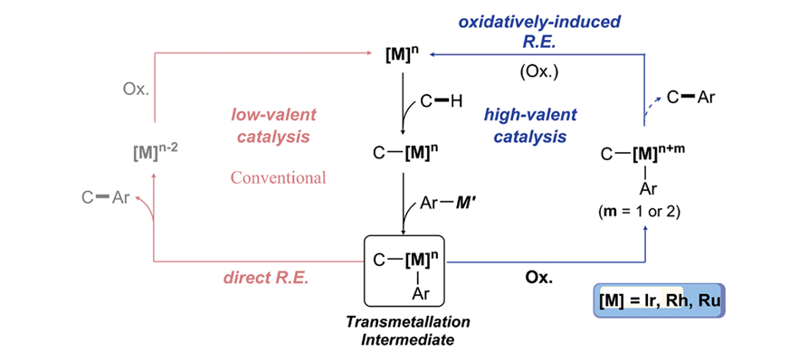
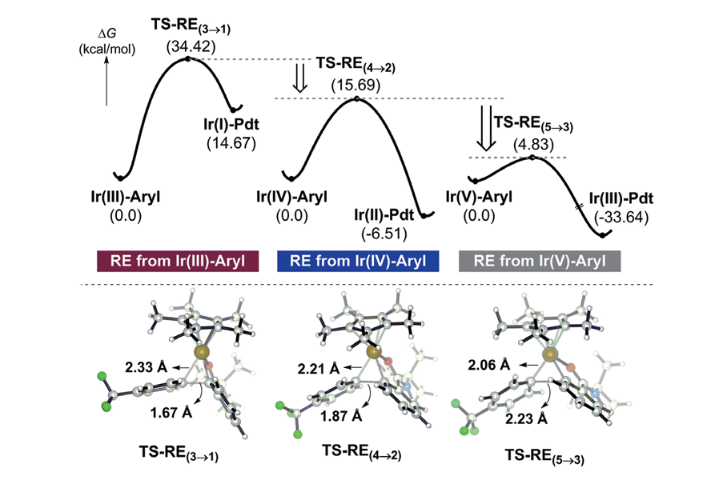

Report by Subjects
Report by Subjects
KAIST RESEARCH ACHIEVEMENTS
From C-H to C-C Bonds at Room Temperature
Department of Chemistry Mu-Huyn Baik
Summary
Direct arylation of C–H bonds is in principle a powerful method of preparing value-added molecules that contain carbon-aryl fragments. Unfortunately, currently available synthetic methods lack sufficient effectiveness to be practical alternatives to conventional cross-coupling reactions. This study hypothesized that the main problem lies in the late portion of the catalytic cycle in which reductive elimination produces the desired C–C bond. Based on this mechanistic hypothesis, a new strategy was implemented where the Ir(III) center of the key intermediate is oxidized to Ir(IV). Density functional theory calculations indicate that the reductive elimination barrier is reduced by almost 19 kcal/mol when the metal is oxidized. Various experiments confirmed this prediction, offering a new methodology capable of efficiently and directly arylating C–H bonds at room temperature with a broad substrate scope and good yields. This study highlights how the oxidation states of intermediates can be deliberately targeted to rationally catalyze an otherwise impossible reaction.
Background
Hydrocarbons are prevalent raw materials in nature. However, it is difficult to use them for organic synthesis due to their inertness under standard conditions. Consequently, a multitude of studies have been conducted to promote the reaction of abundant hydrocarbon derivatives. In particular, the development of efficient and selective arylation reactions is an ongoing topic of research in the field of organic chemistry, due to the importance of such compounds in medicinal, pharmaceutical, and material chemistry. The classical method of introducing aryl groups is to pre-activate starting materials by installing carbon-halogen or carbon-metal bonds on carbon-hydrogen bonds. Although direct functionalization of carbon-hydrogen bonds is the ideal route to functional materials, most of the developed methods require high reaction temperatures and demanding conditions with excessive amounts of additives.
The research team successfully developed iridium-catalyzed C-H arylation reactions with arylsilanes as the aryl source. In sharp contrast to previous strategies that require high temperatures, selective and mild functionalization techniques with high levels of selectivity were achieved. Integrated experimental and theoretical investigation was key for successful development. It is generally accepted that the highly stable nature of a transmetallation intermediate retards the reaction. The team isolated this intermediate for the first time and further investigated its reaction mechanism relevant to the catalysis. The authors effectively lowered the reaction barrier to selectively oxidize the intermediate. Furthermore, density functional theory was utilized to fundamentally understand the reaction mechanism.


Expected effect
This study solves the necessity of high temperature conditions in conventional arylation reactions and successfully synthesized useful compounds using a catalyst under mild conditions. The study enabled efficient organic synthesis based on mechanism understanding, and it is expected that value-added compounds such as pharmaceuticals can be easily prepared using this protocol.
Research Outcomes
[Paper 1] “ Iridium-catalysed arylation of C-H bonds enabled by oxidatively induced reductive elimination” Kwangmin Shin, Yoonsu Park, Mu-Hyun Baik and Sukbok Chang, Nat. Chem. 2018, 10, 218-224 - DOI:10.1038/nchem.2900
[Paper 2] “ Selective Formation of gamma-lactams via C-H Amidation Enabled by Tailored Iridium Catalysts” Seung Youn Hong, Yoonsu Park, Yeongyu Hwang, Yeong Bum Kim, Mu-Hyun Baik and Sukbok Chang, Science 2018, 359, 1016-1021 - DOI: 10.1126/science.aap7503